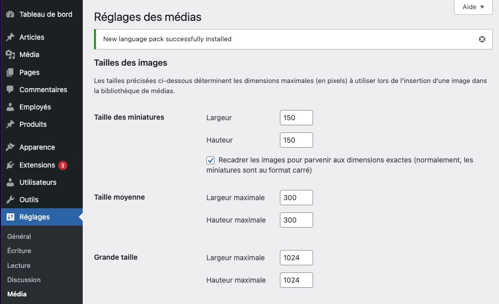

Pour afficher les images mise en avant (image principale du post) dans un modèle (template), il vous suffit, un peu comme <?php the_title();?> et <?php the_content();?> d'appeler la fonction suivante:
Cette fontion génèrera la balise <img> entière.
add_theme_support( 'post-thumbnails' );
Dans WordPress, lorsque vous importez une image dans la bibliothèque de médias, elles sont automatiquement créées en trois tailles que vous pourrez utiliser pour les images mises en avant, mais aussi dans vos articles ou vos modèles (templates).
Vous pouvez changer les valeurs par défaut de ces trois tailles sous Réglages > Médias.
 Médias">Le premier paramètre de <?php the_post_thumbnail(); ?> est le libellé de la taille désirée, soit:
Il est possible d'ajouter des paramètres supprémentaires à la fonction via un tableau (array) PHP. Par exemple, si vous souhaitez ajouter une ou des classe(s) CSS à la balise <img>.
Pour ajouter la classe .image-responsive à la balise image générée, voici ce qu'on devrait ajouter: array('class' => 'image-responsive'), comme dans l'exemple ci-dessous
Vous pouriez aussi ajouter d'autres paramètres tel que l'activation du chargement différé (lazy loading), en ajoutant un autre élément à votre tableau (array) nommé 'loading' => 'lazy'. N'oubliez pas de séparer chaque élément du taleau (array) par une virgule!
Il est possible que vous ayez besoin de différentes images non reliées à un post spécifique pour contruire votre thème. Pour ce faire, vous pouvez les déposer dans un dossiers images dans votre thème.
Pour générer la balise image en question, il vous suffira d'inscrire: